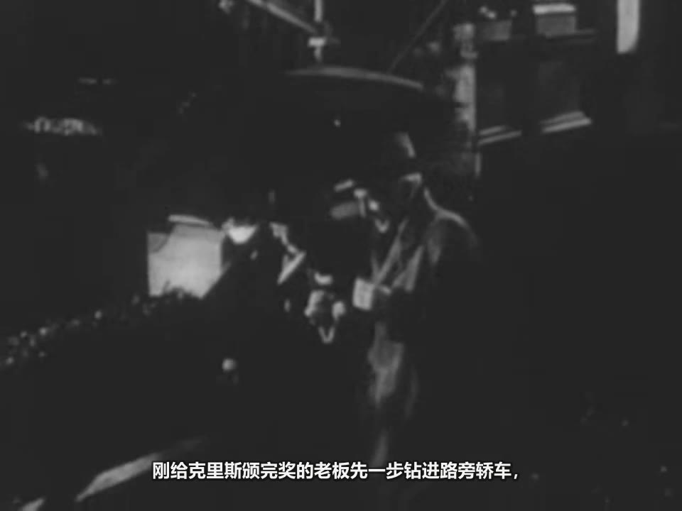
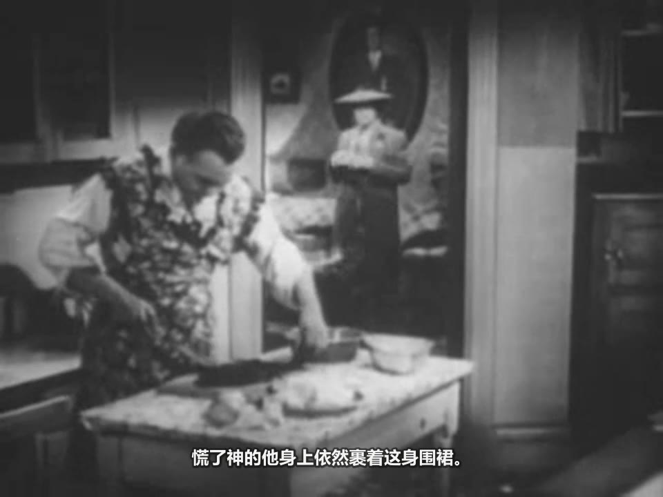
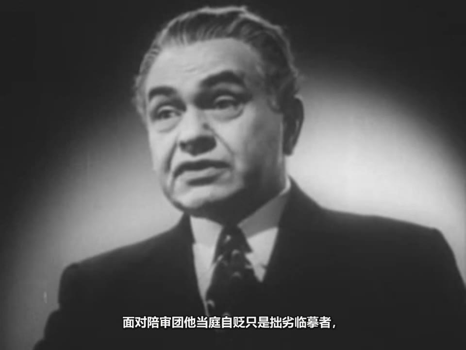

场景相近，动作不同
成片用了两名男子撑伞的背影，漏掉老板进入轿车及女子探身的指定动作。
查看 S06 的成片与原片对照根据定稿文稿从 101 分钟原片定位 42 段镜头，按指定顺序完成跨场景对照、中文配音和原声保留。
文稿从片尾倒叙开场，多次跳回早先场景。模型要按文稿找到指定动作，把跨场景的两组画面依次剪进同一段，并保留四处英文原声。
| 模型 | 初评分 | 精准寻镜 / 50 | 画面实现 / 30 | 制作质感 / 20 | 强度 | 用时 |
|---|---|---|---|---|---|---|
| gpt-6.2-sol | 73.0456 | 35.7131 | 23.9992 | 13.3333 | xhigh | 36 分 42 秒 |
初评按「交付完整性 × 合规度 × 剪辑质量」计算。本次两个乘子均为 1，完整成片 9 分 34 秒，含 60 条源片映射。
展开段落，点击时间码可跳到成片、模型所选原片或参考镜头。两镜段落按成片顺序列出。
故事从多年后的一个寒夜倒叙开场。两名男子抬起一幅镶着厚重雕花框的女人正面肖像走出画廊，衣衫落魄的克里斯就站在街角默默看着它被买走。
| 镜头 | 成片 | 模型所选原片 | 参考原片 |
|---|---|---|---|
| 子镜 1 | –00:08.76 | –100:26.24 | –100:25.00 |
| 子镜 2 | –00:13.52 | –100:37.04 | –100:34.50 |
初评 · 定位 81.15% · 画面实现通过。子镜A（0–8s）完整拍出'两名男子抬起镶厚重雕花框的女人正面肖像走出画廊'，与字幕3–8s同步；子镜B（8–13s）拍出戴呢帽、衣衫落魄的克里斯在街头摊架旁默望肖像离开，与字幕9–13s'衣衫落魄的克里斯就站在街角/默默看着它被买走'对应，切镜点8s较旁白起点9s偏差约1s（≤1.5s）。两镜先A后B真实切换，未缩成单镜、未倒置，无错镜垫画。
把时间拉回最初那场庆功长桌宴席，白发老板当众把一只金表郑重递进克里斯手里；可多年后同一个昏暗出纳间里，这双领奖的手却悄悄拉开了公司的钱柜。
| 镜头 | 成片 | 模型所选原片 | 参考原片 |
|---|---|---|---|
| 子镜 1 | –00:20.96 | –03:02.84 | –03:04.00 |
| 子镜 2 | –00:27.28 | –49:57.20 | –49:55.00 |
初评 · 定位 76.64% · 画面实现通过。子镜A（13–20s）拍出'白发老板当众把金表郑重递进克里斯手里、他接过低头摆弄'，递表动作16s出现、对应字幕17–21s，偏差约1s；子镜B（20–25s）切至同一昏暗出纳间，克里斯趁无人独自处理公司钱物，与字幕21–27s'这双手却悄悄拉开了公司的钱柜'同步，切镜点20s较旁白起点21s偏差约1s。两镜先A后B跨时空对照成立，人物无张冠李戴，无空镜凑数。
在公司他一板一眼受人敬重，回到家却连端盘洗碗都要亲自系上碎花围裙；往后妻子拎着秘密回家掀桌兴师问罪时，慌了神的他身上依然裹着这身围裙。
| 镜头 | 成片 | 模型所选原片 | 参考原片 |
|---|---|---|---|
| 子镜 1 | –00:33.44 | –36:31.08 | –36:30.50 |
| 子镜 2 | –00:40.16 | –67:47.00 | –68:43.50 |
初评 · 定位 44.04% · 画面实现未通过。子镜A达成：27–33s 拍出'端盘走向厨房并系上碎花围裙'，与字幕28–33s同步。但子镜B仅拍到阿黛尔拎物入门、站定（33–40s），核查目标要求的'他站在桌旁被戴宽檐帽的阿黛尔指着怒斥/掀桌兴师问罪'这一关键微动作在 40.16s 窗口内并未实际拍出，前景克里斯也持续烹煮而非'慌了神被斥'，故 visual_coverage 判 false（宁严勿纵）。所用镜头仍为正确场景、先A后B顺序未倒置、无错镜垫画，且阿黛尔入场（约33–34s）与字幕34s'妻子拎着秘密回家'偏差≤1.5s，故另两项为 true。
他全部的精神寄托都挤在洗手盆旁边，镜头先落向盆沿那只插着几枝雏菊的玻璃瓶；紧接着画布上那束笔触拙劣的插花，揭开了他藏在日常背后的画室。
| 镜头 | 成片 | 模型所选原片 | 参考原片 |
|---|---|---|---|
| 子镜 1 | –00:47.40 | –16:19.72 | –16:18.50 |
| 子镜 2 | –00:53.56 | –19:54.92 | –19:41.00 |
初评 · 定位 40.15% · 画面实现通过。核查目标四要素齐备：盆沿玻璃瓶雏菊（40.2s起）、克里斯在盆边持花、画布插花特写（48.2–50.2s）、来客在画架旁（46s后入画、51.2–53.2s相对交谈）。子镜先后为 A（花瓶）→B（画布），未倒置、未缩并成一镜，也无无关空镜垫画。旁白『镜头先落向……玻璃瓶』约43–46s、『紧接着画布上……』约47–50s，对应画面现身偏差均<1.5s，切换紧扣旁白节奏。
墙头还永远供着一张前夫的椭圆肖像，画中男子左胸别着闪亮勋章被妻子逢人就夸；可日后街边却凭空冒出一个抬起帽檐、左眼戴着黑眼罩的活人站在眼前。
| 镜头 | 成片 | 模型所选原片 | 参考原片 |
|---|---|---|---|
| 子镜 1 | –01:00.96 | –17:50.76 | –17:52.00 |
| 子镜 2 | –01:07.56 | –74:38.88 | –74:38.00 |
初评 · 定位 86.86% · 画面实现未通过。A镜（椭圆肖像+左胸勋章，53.2–58.2s）与B镜（魁梧男抬帽檐，63.2–65.2s）顺序正确、无张冠李戴垫画；但盲看画面中帽男抬檐后仅见咧嘴笑脸，左眼黑色眼罩始终不可见，关键指定道具缺失；且克里斯（深色背头西装男）61.2–63.2s 表情严肃倾听、65.2–67.2s 抬眼说话，并无核查目标要求的『神色震惊』反应，场景亦为室内门口而非街边。旁白『左眼戴着黑眼罩的活人站在眼前』约65–67s 对应的眼罩揭示画面在区间内从未出现，动作现身偏差远超1.5s，同步失败。
这一切的滑落其实早在散场雨夜埋下引子。刚给克里斯颁完奖的老板先一步钻进路旁轿车，车里金发女人探身相迎，站在门内张望的他动了不该有的念头。
| 镜头 | 成片 | 模型所选原片 | 参考原片 |
|---|---|---|---|
| 单镜 | –01:20.92 | –06:23.64 | –05:35.00 |
初评 · 定位 0.00% · 画面实现未通过。核查目标要求『路旁豪华轿车敞开车门、金发女郎探身微笑』及『宴席门内克里斯与男同事探头张望』两组画面，但整个区间只有两男共伞下台阶与俯拍街道走远两个镜头：无轿车、无金发女人、无门内张望的同事群像。指定关键人物与道具全部缺席，属用不相关的撑伞行走镜头凑数垫画，视觉与旁白『老板先一步钻进路旁轿车』『车里金发女人探身相迎』『站在门内张望的他』完全脱节，无任何对应动作可在±1.5s内对上，三项均判否。
独自打伞走上湿滑夜街时，暗处灯柱旁忽然闪出两个身影推打拉扯；等喧嚣散去，反光的柏油路面上只剩下凯蒂痛苦半坐在地，一只圆帽孤零零落在手边。
| 镜头 | 成片 | 模型所选原片 | 参考原片 |
|---|---|---|---|
| 子镜 1 | –01:27.08 | –08:13.04 | –08:26.50 |
| 子镜 2 | –01:34.52 | –08:40.48 | –08:40.00 |
初评 · 定位 45.29% · 画面实现通过。先A后B两镜顺次成立：A（灯柱旁两身影推打拉扯、喧嚣散去一人离场）位于80.9–86.9，B（凯蒂半坐反光柏油路、圆帽落手边）自86.9起持续至93.9，均在expected span [80.92,94.52] 内；圆帽道具、花纹裙、湿反光路面、痛苦半坐并抬手的微动作均有实拍；切镜点86.9与旁白'等喧嚣散去'句首偏差约0.4s（≤1.5s），未缩成单一长镜、未倒置、无无关空镜垫画。
好心解围的克里斯还没问清缘由，巡警已经顺着雨夜街角赶到跟前盘查；站在他身旁的凯蒂转过脸，沉着地抬手指着街道另一头，悄悄替行凶者圆了谎。
| 镜头 | 成片 | 模型所选原片 | 参考原片 |
|---|---|---|---|
| 单镜 | –01:47.08 | –09:33.16 | –09:35.50 |
初评 · 定位 52.47% · 画面实现通过。关键要素齐备：大檐帽巡警赶到盘查（94.5起已在走近途中，与'巡警已经顺着雨夜街角赶到跟前'同步，偏差≤1.5s）；凯蒂立于克里斯身旁、转脸并抬手明确指向街另一头的动作在99.9–106.9镜内实拍（画面22–25s可见其手臂横伸示意），与旁白第二句'沉着地抬手指着街道另一头'吻合；人物无张冠李戴，两镜均为本段连续动作，无错误相似镜头凑数。
保留该段英文原声，中文翻译见定稿文稿与成片字幕。
| 镜头 | 成片 | 模型所选原片 | 参考原片 |
|---|---|---|---|
| 单镜 | –01:59.08 | –13:30.60 | –13:30.40 |
初评 · 定位 96.91% · 画面实现通过。英文原声'Well, let's see. Greenwich Village is full of artists. I meet you in Greenwich Village. You must be an artist, right?'由凯蒂在107–114s说出，'Well, I, uh—Yes, yes, I paint.'由克里斯在115–119s严肃承认，原声清晰完整、无中文旁白顶撞遮盖；叼烟对坐、黑礼服、严肃承认画画等核查目标全部实拍，正反打切镜（113.9）服务于同一金句段落，非垫画，时序与台词逐句对齐。
这句虚荣的谎话很快引出第二天寄进她屋里的长信，被人随手压在一只大圆面包和旧摆件底下；一只男人的手把信抽出来，穿背带的青年独自站在屋中拆读。
| 镜头 | 成片 | 模型所选原片 | 参考原片 |
|---|---|---|---|
| 子镜 1 | –02:06.44 | –20:33.16 | –20:34.50 |
| 子镜 2 | –02:11.72 | –20:40.44 | –20:42.50 |
初评 · 定位 74.23% · 画面实现通过。子镜A（119.1–126.9）完整拍出'大圆面包+旧摆件压信'的凌乱桌面及'男人的手把信抽出来'的微动作，与旁白'被人随手压在一只大圆面包和旧摆件底下；一只男人的手把信抽出来'同步（手入画约126.2s，偏差<1.5s）；子镜B（126.9–131.1）拍出背带青年独自拆读，对应'穿背带的青年独自站在屋中拆读'，出现于127s左右，偏差≤1.5s。required_subshots=2，实际确为两镜先A后B，未缩并、未倒置，无凑数空镜。
保留该段英文原声，中文翻译见定稿文稿与成片字幕。
| 镜头 | 成片 | 模型所选原片 | 参考原片 |
|---|---|---|---|
| 单镜 | –02:17.88 | –21:59.16 | –21:59.10 |
初评 · 定位 93.69% · 画面实现通过。单镜原声段，画面要素（凯蒂仰坐花纹沙发、背带青年站立一旁、比划对话）与'点明雨夜故意给警察指错方向'的台词内容在131.7–137.9内齐备；英文原声清晰完整播出整句金句，仅叠加中文翻译字幕，无中文旁白顶撞遮盖；视觉切换与台词起点（约131.7s）同步，偏差≤1.5s，无张冠李戴或错误相似镜头。
其实凯蒂的合住小屋远不像她吹嘘得那样体面，穿波点裙的室友刚抱回大购物盒放在床上拆看；一旁的凯蒂叉着腰冷眼旁观，脑子里早就盘算起摆脱窘境的出路。
| 镜头 | 成片 | 模型所选原片 | 参考原片 |
|---|---|---|---|
| 单镜 | –02:31.84 | –25:15.92 | –25:14.50 |
初评 · 定位 91.17% · 画面实现通过。单拍动作段：波点裙室友'抱回大购物盒放在床上拆看、取出衣物展开'（约138–144s）与凯蒂'叉着腰冷眼旁观'（137.9–143s 叉腰姿态清晰）均在 expected_output_span [137.88, 151.84] 内实际拍出，且后续凯蒂接衣查看与旁白'脑子里早就盘算起摆脱窘境的出路'同步推进；动作现身偏差≤1.5s，无无关空镜垫画，人物服装（波点裙/浅色睡袍）与脚本指认一致，无张冠李戴。
等再约到露天花园喝饮料时，穿白衣的凯蒂先故意推拒直白塞钱，随即又身子前倾贴近桌面；她顺着他喜欢作画的心思，提议干脆由他出面另租一间带画室的公寓。
| 镜头 | 成片 | 模型所选原片 | 参考原片 |
|---|---|---|---|
| 单镜 | –02:46.52 | –29:35.84 | –29:35.50 |
初评 · 定位 63.94% · 画面实现通过。核查目标三要素全部盲看可见：插吸管玻璃杯在 154.8–155.8 克里斯镜头左下角实拍；白衣凯蒂与西装克里斯同桌对坐关系成立；'身子前倾贴近桌面低声劝说'的微动作在 155.8–165.8 凯蒂镜头中明确拍出（前倾、张口强调、浅笑）。required_subshots_count=1，中间 1 秒克里斯反应镜属同一对话场的正反打，非无关空镜或张冠李戴，不构成垫画。中文旁白自 151.84 起覆盖该段，画面动作与'推拒塞钱—前倾—提议租带画室公寓'句意同步，偏差为 0。
为了凑齐租屋的钱又找不到人担保，克里斯趁妻子离开卧房跪到床头矮柜前偷偷翻找；摸出盒里藏着的私房票据后，他捧在手里一张张捻开盘算起挪用的主意。
| 镜头 | 成片 | 模型所选原片 | 参考原片 |
|---|---|---|---|
| 子镜 1 | –02:54.28 | –35:05.28 | –34:58.00 |
| 子镜 2 | –03:00.52 | –35:15.00 | –35:14.50 |
初评 · 定位 53.60% · 画面实现通过。先 A 后 B 两子镜按序实拍：A 镜（165.8–172.8）完整呈现'跪床头矮柜—拉抽屉—摸索—取出藏物'，柜顶盒、烟灰缸、凌乱床铺等卧室道具均在画面；B 镜（172.8–180.5）呈现'捻开一叠白色票据扇形展开、低头盘算查看'的核心微动作，人物服装（白衬衫+深色马甲）前后一致无张冠李戴。切镜点 165.8 较期望起点 166.52 仅提前 0.72s，在 ≤1.5s 容差内；段尾 180.5 与窗口收束吻合。该段为 narration 模式，中文旁白'趁妻子离开卧房偷偷翻找…捻开盘算挪用主意'与画面同步推进，无英文原声顶撞，亦无缩成单镜或前后倒置。
谁料看房当天最先踏进画室的除了凯蒂，后脚还跟进了戴浅色草帽的约翰尼；带看人在满墙画满靶心与飞镖草图的前屋主墙壁前介绍，这对男女已经抢先相中了新巢。
| 镜头 | 成片 | 模型所选原片 | 参考原片 |
|---|---|---|---|
| 单镜 | –03:14.88 | –37:29.12 | –37:30.00 |
初评 · 定位 84.88% · 画面实现通过。核查目标三要素齐备：飞镖投靶素描壁画（184–195 墙上放射箭线+棋盘格）、秃顶中介（背对镜头驻足者）、黑裙戴帽凯蒂与浅色西装草帽约翰尼停步仰看（184 后先后入画站定）。180.5–184 的入场跟拍镜直接对应旁白首句『最先踏进画室的除了凯蒂，后脚跟进了戴浅色草帽的约翰尼』，属叙事必需画面而非无关垫镜；两镜顺次衔接、无张冠李戴。动作起点 180.5 与旁白起点 180.52 偏差 0.02s，壁画仰看段覆盖至 194.88，同步达标。本段为 narration 模式，无英文原声冲突问题。
搬进屋的头一个清晨，镜头沿着地板依次掠过散落的高跟鞋、白手套、飞镖和同心圆小包；穿背带的约翰尼蹲到壁炉前弯腰拎起那只手袋端详，关心的仍只是钱。
| 镜头 | 成片 | 模型所选原片 | 参考原片 |
|---|---|---|---|
| 子镜 1 | –03:22.64 | –38:40.84 | –38:40.00 |
| 子镜 2 | –03:29.04 | –38:48.00 | –38:48.00 |
初评 · 定位 94.64% · 画面实现未通过。先 A 后 B 顺序正确：地板扫掠 195.0 起（偏差 0.12s≤1.5s），拾袋端详 202–208 落在区间内，无缩并或倒置，人物亦未错认。但核查目标关键道具/地点缺失：①旁白与核查目标明确要求掠过『散落的高跟鞋/脱落的白鞋』，盲看记录 195–202 仅见两只白手套、两根白棍与靶心手袋，全程无鞋类物件入画；②第二镜要求『穿背带的约翰尼蹲到壁炉前』，实际画面为白衬衫领带男子跪于普通地板，未见背带，背景仅门与家具轮廓、无壁炉。依『宁严勿纵、关键道具未出现必判 false』，visual_coverage 判 false。208–209.04 的客厅群像系 S17 建立镜提前约 1.0s 渗入，在 1.5s 容差内且服务于下段叙事，不构成 S16 的错误凑数镜，故 no_padding 仍为 true。
为免穿帮，凯蒂硬把约翰尼介绍成室友的男友；克里斯站在对面抬头再三打量这张年轻人面孔，总觉在哪里见过，一旁的凯蒂绷紧了脸大气不敢喘。
| 镜头 | 成片 | 模型所选原片 | 参考原片 |
|---|---|---|---|
| 单镜 | –03:41.60 | –43:17.76 | –43:16.50 |
初评 · 定位 90.45% · 画面实现通过。核查目标两要素均实拍：①克里斯抬头狐疑盯视身材更高的西装约翰尼——211–218 矮个花纹领带男子走近抬头看高个佩花男子并说话，对应『再三打量这张年轻人面孔』；②中间切到白色条纹领连衣裙凯蒂神色紧张偷看——218–221.6 凯蒂近景绷紧脸、忧虑凝视，对应『绷紧了脸大气不敢喘』。208–211 群像镜承载『凯蒂硬把约翰尼介绍成室友男友』的引介语境，与旁白首句同步，非无关对话空镜；三镜顺次（引介→打量→凯蒂紧张）与旁白语序一致，无倒置、无人物错认（约翰尼由 S15 草帽浅装换为佩花深色西装，符合搬入后新造型）。切换点 211 与 218 均落在旁白对应分句 ±1.5s 内，temporal_sync 达标。本段为 narration 模式，无英文原声被遮盖问题。
等外人一散，凯蒂立刻坐上床沿把一条手臂搭到克里斯肩头轻声叹气；她抱怨女演员若没有体面行头与衣裙根本站不住脚，又顺手向他索要了一笔巨额开销。
| 镜头 | 成片 | 模型所选原片 | 参考原片 |
|---|---|---|---|
| 单镜 | –03:55.16 | –45:53.60 | –45:47.50 |
初评 · 定位 62.41% · 画面实现通过。关键人物（凯蒂/克里斯）、指定服装（浅色条纹领家居服、深色西装）、微动作（坐床沿、手臂搭肩颈、贴近说话、末尾索钱姿态）均在 221.6–234.6 实拍呈现，与旁白'坐上床沿…搭到肩头…索要巨额开销'逐句对应；镜头结束点 234.6 较计划 235.16 提前 0.56s，在 1.5s 容差内，无张冠李戴或凑数空镜。
好不容易安顿下画板，克里斯在窗台前画出一幅高架铁路与蜿蜒长蛇纠缠的怪画；没承想日后妻子提着购物袋逛街路过画廊橱窗，隔着玻璃一眼认出了这张熟画。
| 镜头 | 成片 | 模型所选原片 | 参考原片 |
|---|---|---|---|
| 子镜 1 | –04:02.52 | –47:24.80 | –47:23.00 |
| 子镜 2 | –04:09.56 | –67:16.28 | –67:14.50 |
初评 · 定位 88.01% · 画面实现未通过。A 镜只完成'画作拉远显出画中内容'，未拍出核查目标要求的'公寓窗台桌上'环境与'显出窗景'；B 镜盲看记录明确为'男子'而非提购物袋的妻子阿黛尔，手持物为'卷状物/纸卷'而非购物袋，画作置于露天画架而非'画廊玻璃橱窗'，隔玻璃认出熟画的关键人物与道具要素缺失，故 coverage 判 false；B 镜人物与脚本指定妻子不符，属张冠李戴/错误相似镜头，no_padding 判 false（A→B 先后顺序本身未倒置）。切镜点 241.6 与旁白'没承想日后妻子…'（约 242.6 起）偏差约 1s，时间同步仍成立。
眼见女人那头胃口越喂越大，深夜孤身留守出纳间的克里斯再次趁四下无人把手伸向公款；正把现钞塞进怀里时楼梯门外闪过暗影，他惊恐转头死死盯住来人。
| 镜头 | 成片 | 模型所选原片 | 参考原片 |
|---|---|---|---|
| 单镜 | –04:23.32 | –50:13.44 | –50:06.00 |
初评 · 定位 38.17% · 画面实现通过。马甲克里斯、攥现钞欲藏衣内（257.6 起胸前持纸/钞）、听见人影后猛地僵住转头死盯（254.6 抬头+257.6–263.3 凝视）均实拍到位；255.6–257.6 的 CASHIER 窗外戴帽男子即旁白'楼梯门外闪过暗影/来人'的对应影像，非无关凑镜；抬头惊愕点 254.6–255.6 与旁白'正把现钞塞进怀里时…闪过暗影'（256.6 起）偏差约 1s，≤1.5s；本段为 narration 模式，中文旁白贯穿、无原声冲突问题。
被逼得走投无路的是克里斯，外面趁机捞钱的却是约翰尼；他趁夜抱起两张无名油画钻进一家小当铺，站在柜台前把画逐一摆出来吹嘘卖价，老板却毫不接招。
| 镜头 | 成片 | 模型所选原片 | 参考原片 |
|---|---|---|---|
| 子镜 1 | –04:32.28 | –51:08.68 | –51:07.50 |
| 子镜 2 | –04:41.12 | –51:29.96 | –51:25.50 |
初评 · 定位 90.65% · 画面实现通过。子镜A（夜街抱画进亮灯当铺）263.3–272.3 实拍到位，与旁白『趁夜抱起两张无名油画钻进一家小当铺』（字幕269.3–271.3）偏差<1.5s；子镜B（柜台前竖画推销给坐着的胖背带男）272.3–281.1 实拍到位，与『站在柜台前把画逐一摆出来吹嘘卖价／老板却毫不接招』（字幕272.3–277.3）同步。两镜按先A后B顺次切换，未缩并、未倒置，无张冠李戴或空镜垫画；英文原声出现在中文旁白句尾之后，无顶撞遮盖。
从当铺碰壁出来后，约翰尼干脆挤进热闹的街头露天画摊兜售；他站在铁架边高高竖起一幅黑发女人的侧脸肖像，凑近跟戴贝雷帽的老画贩讨价还价留作寄卖。
| 镜头 | 成片 | 模型所选原片 | 参考原片 |
|---|---|---|---|
| 单镜 | –04:54.80 | –53:05.80 | –53:00.50 |
初评 · 定位 60.28% · 画面实现通过。核查目标四要素齐备：草帽条纹西装约翰尼、黑发女人侧脸肖像、贝雷帽白须老画贩、铁架/展架环境，均在281.12–294.8内实拍；单拍动作由同场连续多角度覆盖，无无关对话空镜或错误相似镜头凑数。旁白『从当铺碰壁出来后』（281.3–282.3）压约翰尼持画近景、『挤进街头露天画摊』（283.3–286.3）压画摊全景、『站在铁架边高高竖起／黑发女人侧脸肖像』（287.3–290.3）与其竖画递向老者的动作同步、『讨价还价留作寄卖』（291.3–294.3）对应老画贩激动还价与约翰尼倾听，各动作现身偏差均≤1.5s；本段为narration模式，中文旁白连贯无英文原声顶撞。
等下一次重返街头摊位时局面却陡然一转，那名贝雷帽画贩老远迎上来一把抓紧他的外套袖子；画作竟被行家一口气高价买走，眼下买主正急着四处追查真作者。
| 镜头 | 成片 | 模型所选原片 | 参考原片 |
|---|---|---|---|
| 单镜 | –05:08.08 | –55:59.24 | –55:53.50 |
初评 · 定位 59.81% · 画面实现通过。visual_check_target 三要素齐备：挂满画作的街头摊位（背景静物画与人物画像）、贝雷帽老画贩、抓住条纹西装约翰尼外套臂膀并不停比划，均在 294.8–308.08 内实拍呈现；'一把抓紧袖子'动作于段首 294.8 即出现并在 305.8 重复，与旁白'老远迎上来一把抓紧他的外套袖子'（约 298.8–301.8）偏差在容差内且动作持续覆盖整句；门厅镜头 308.8 才切入，仅比段尾 308.08 晚 0.72s，无张冠李戴、无凑数空镜。
眼看画商与大评论家直接追到了公寓门厅里，约翰尼索性顺水推舟一把将站在旁边的白衣凯蒂推向前台；突然顶了别人心血名头的她愣在原地，一时慌得张口结舌。
| 镜头 | 成片 | 模型所选原片 | 参考原片 |
|---|---|---|---|
| 单镜 | –05:22.32 | –58:31.72 | –58:29.00 |
初评 · 定位 90.56% · 画面实现通过。check_target 全部命中：四男门厅交谈（308.8 起，较段首 308.08 仅晚 0.72s，≤1.5s 容差）、约翰尼伸手把来客视线引向一旁（313–314，对应旁白'顺水推舟/推向前台'311.8–315.8）、凯蒂切近景慌张错愕（314.8–319.8，对应'愣在原地/张口结舌'316.8–321.8）。319.8–321.8 的笑场为同一门厅场景的连续反应镜头，人物未张冠李戴、非无关空镜；required_subshots_count=1 的'单拍动作'由该场景连贯完成，无倒置或缩并问题。
保留该段英文原声，中文翻译见定稿文稿与成片字幕。
| 镜头 | 成片 | 模型所选原片 | 参考原片 |
|---|---|---|---|
| 单镜 | –05:30.52 | –61:24.16 | –61:24.50 |
初评 · 定位 95.40% · 画面实现通过。画面要素与 check_target 完全一致：窗格旁、高个评论家俯身、白衣凯蒂抬眼倾听；英文原声 'That's a very good description. The way I look at it, every painting, if it's any good, is a love affair.' 自 321.8 起清晰完整播出（较段首 322.32 提前 0.52s，在容差内），中文旁白已于 321.8 的'一时慌得张口结舌'结束，原声段无任何中文旁白顶撞遮盖；镜头 321.8 切入后一镜到底至 330.5，无错镜垫画。
既已口头认下作者头衔，画布角落还得补出真字迹。灯影下约翰尼指明画幅边缘，督促凯蒂弯腰一笔一画签上假名；听见门外动静后两人又慌忙扑上去抬走画框。
| 镜头 | 成片 | 模型所选原片 | 参考原片 |
|---|---|---|---|
| 单镜 | –05:44.24 | –63:38.44 | –63:35.50 |
初评 · 定位 88.75% · 画面实现通过。核查目标四要素齐备：①灯影下约翰尼伸手示意画幅边缘并递笔（330.5–334s）；②凯蒂弯腰执笔在画布上签字（334.5–337.5s，与字幕'督促凯蒂弯腰一笔一画签上假名'同步）；③门外动静（342–344s男子进门镜头交代声源）；④两人扑上抬走画框、画架空空（339.5–341.5s）。单拍动作连贯无张冠李戴，无无关空镜垫画；旁白各句与画面现身偏差均在1.5秒内。
对署名调包一无所知的克里斯还沉溺在温存假象里。女主人懒洋洋斜靠床榻将裸足伸向面前，穿马甲的男人便顺从地蹲在床脚，俯下头全神贯注替她抹好脚趾甲。
| 镜头 | 成片 | 模型所选原片 | 参考原片 |
|---|---|---|---|
| 单镜 | –05:58.20 | –66:50.56 | –66:46.50 |
初评 · 定位 83.49% · 画面实现通过。核查目标全部落实：女主人懒洋洋斜靠床榻伸裸足、穿白衬衫黑马甲男人顺从蹲在床脚、俯头全神贯注抹脚趾甲，均在实际画面中拍出且人物服饰与脚本一致（马甲+领结的克里斯、羽毛褶边长袍的凯蒂）。355–358s凯蒂近景属同一场景的反应镜头，非凑数空镜；旁白'沉溺温存假象—伸裸足—蹲床脚涂趾甲'与画面动作逐句对应，偏差≤1.5秒。
可橱窗里那幅蛇画还是引爆了家里风波。阿黛尔怒气冲冲跨进家门，连头上的宽檐帽都来不及摘下便大声斥责丈夫只配偷临女名家，站在对面的他瞬间呆愣当场。
| 镜头 | 成片 | 模型所选原片 | 参考原片 |
|---|---|---|---|
| 单镜 | –06:12.16 | –68:26.48 | –68:28.50 |
初评 · 定位 55.80% · 画面实现通过。核查目标要素齐备：阿黛尔宽檐帽+珍珠项链、神色愤慨开口训斥（359–360s、366–370s两镜），镜头来回对切穿碎花马甲愣在原地的克里斯（358–359s、360–366s、370–372.2s三镜），帽未摘即斥夫'只配偷临女名家'与末镜'呆愣当场'均由对切画面承载。无第三人冒名、无无关对话空镜；旁白句'引爆风波—怒冲进门—来不及摘帽—斥责—呆愣'与对切节奏同步，切换偏差≤1.5秒。
摸清真相的克里斯戴上礼帽急忙找去画室兴师问罪；可穿着深色花衣的凯蒂立刻迎身贴上来，轻轻将手按在他胸口委屈诉苦，几句话就让他心软放下了追究。
| 镜头 | 成片 | 模型所选原片 | 参考原片 |
|---|---|---|---|
| 单镜 | –06:25.72 | –70:31.48 | –70:29.00 |
初评 · 定位 88.15% · 画面实现通过。核查目标三要素齐备：戴帽西装克里斯（373.2s入画即戴fedora）、黑底花纹长裙凯蒂（372.2s起全程同款豹纹裙）、'迎身贴上+手掌按胸口'微动作（376.2–380.2s清晰可见，380.2–385.7s近景中手仍搭其胸前）。本段为单拍动作结构，三镜均属同一连续戏剧节拍（等待→逼近→按胸诉苦），无张冠李戴、无无关空镜垫画。旁白同步：'戴上礼帽'372.2s、'找去画室兴师问罪'373.2s与克里斯入画吻合，'迎身贴上来'376.2s、'手按胸口委屈诉苦'378.2s、'心软放下追究'383.2s均与画面动作偏差≤1.5s；narration段中文旁白覆盖原声属预期，无同步问题。
他甚至亲手又画出一幅浓妆正面肖像并默许印上别人的姓名；很快白色的展览手册印出女作者大名，那张熟悉的脸也堂堂正正挂上亮堂展厅的正中墙面。
| 镜头 | 成片 | 模型所选原片 | 参考原片 |
|---|---|---|---|
| 子镜 1 | –06:34.20 | –72:33.80 | –72:33.50 |
| 子镜 2 | –06:40.16 | –72:59.76 | –72:58.00 |
初评 · 定位 88.51% · 画面实现通过。两镜连贯结构'先A后B'严格成立：A=手持印画廊名与女画家署名的白色展览册特写（391.2–394.2s，'DELLAROWE GALLERIES'+'KATHERING MARSH'清晰可读），B=亮堂展厅白墙正中凯蒂正面肖像与往来看客剪影（394.2–400.2s，两名观众横穿、白发者手持图录），顺序未倒置、未缩并。前置作画镜头（386.2–391.2s）直接对应旁白首句'亲手又画出一幅浓妆正面肖像并默许印上别人的姓名'，属叙事必要画面而非凑数垫画；画中人与 posing 的凯蒂服饰一致，无人物错置。旁白同步：'画出肖像'386.2s对作画镜、'展览手册印出女作者大名'391.2s对册页特写、'挂上亮堂展厅正中墙面'394.2–399.2s对展厅镜，各切换偏差均≤1.5s。
先是艺术版整版刊出这幅正面肖像，躲在玻璃小窗后的克里斯捧着报纸独自发笑；可转眼同一个女人头像再度爬上报纸头版，这回标题写着的却是骇人的谋杀惨案。
| 镜头 | 成片 | 模型所选原片 | 参考原片 |
|---|---|---|---|
| 子镜 1 | –06:47.28 | –73:44.84 | –73:43.00 |
| 子镜 2 | –06:54.76 | –87:08.72 | –87:08.50 |
初评 · 定位 91.25% · 画面实现通过。核查目标四要素逐一落地：艺术版正面肖像（400.2–403.2）、克里斯隔玻璃窗读报（403.2–407.2，旁白『独自发笑』与其独处读报神态相符）、同一肖像的谋杀头版（407.2–412.2，标题与肖像完全对应）、克里斯惨白凝重读报（412.2–414.76，眉头紧锁持报）。跨时空对照先A后B成立，未倒置、未缩并，无凑数空镜；字幕『先是艺术版整版刊出…』『可转眼同一个女人头像…』分别压在 400.2–403.2 与 407.2–412.2 画面上，切换偏差<1.5s，narration 模式无英文原声顶撞问题。
偏在这节骨眼上，撞见前夫活口后的克里斯在深夜悄悄领着他溜进黑漆漆的家门；直到活生生的希金斯直接站在自己那张墙上旧肖像底下，克里斯以为终于能彻底解脱。
| 镜头 | 成片 | 模型所选原片 | 参考原片 |
|---|---|---|---|
| 子镜 1 | –07:01.92 | –80:07.48 | –79:44.50 |
| 子镜 2 | –07:09.56 | –80:17.24 | –80:17.00 |
初评 · 定位 44.81% · 画面实现未通过。B 镜中『戴帽活人希金斯站在椭圆旧肖像底下』已拍出（422.2–429.6），但脚本明确要求的微动作『克里斯坐在旁侧冷眼打量』未实现：盲看记录显示克里斯是站立、抬臂指向画框并开口交谈（423–425 指画、随后仰头），属主动讲解姿态而非静坐冷眼旁观；A 镜『轻手轻脚开门引路入室』亦仅见两人沿竖直光带走入黑暗与胸前递接动作，未见克里斯亲手开门的指定微动作。关键姿态/微动作缺失，宁严勿纵判 false。结构上仍为 2 镜先A（415.2–422.2 夜入黑宅）后B（422.2–429.6 肖像下对峙），人物未张冠李戴、无无关空镜垫画，故 no_padding 为 true；旁白『在深夜悄悄领着他溜进黑漆漆的家门』落于 419.2–421.2、『直到活生生的希金斯…站在旧肖像底下』落于 422.2–426.2，与画面切换偏差≤1.5s，narration 模式无原声冲突，temporal_sync 为 true。
以为甩脱婚姻束缚的他赶回公寓外头想给凯蒂惊喜，不料透过格纹玻璃窗望向明晃晃的屋内；黑暗阴影里的克里斯亲眼撞见她正和约翰尼紧紧搂抱在一处。
| 镜头 | 成片 | 模型所选原片 | 参考原片 |
|---|---|---|---|
| 单镜 | –07:22.60 | –81:15.84 | –81:15.00 |
初评 · 定位 92.20% · 画面实现通过。核查目标三要素齐备：黑暗窗外克里斯侧影凝视（429.6-432.6、433.6-435.6、437.6-439.6）、格纹玻璃门切入亮处室内（432.6-433.6、435.6-437.6）、白裙凯蒂与条纹衫约翰尼紧紧相拥（435.6-437.6 隔玻璃拥抱＋439.6-442.6 近景搂抱）。required_subshots_count=1，段内各切镜均服务于同一'窥见'节拍，无人物张冠李戴、无无关空镜垫画。旁白'以为甩脱婚姻束缚…不料透过格纹玻璃窗…亲眼撞见她正和约翰尼紧紧搂抱'逐句对应：凝视起于429.6，玻璃切入432.6，拥抱近景439.6-442.6收尾，动作现身偏差≤1.5s；本段为narration模式，中文旁白与画面同步，无原声顶撞问题。
幻梦破碎后的克里斯仍不死心赶去求婚，却在卧房里碰了个彻底冷硬的钉子；靠在软包床头上的凯蒂抬起右臂厉声指向门口叫他滚蛋，彻底疯癫的他终于猛扑上床行凶。
| 镜头 | 成片 | 模型所选原片 | 参考原片 |
|---|---|---|---|
| 单镜 | –07:37.40 | –85:34.80 | –85:34.50 |
初评 · 定位 91.48% · 画面实现通过。核查目标要素全部实拍：白色菱格软包床头（442.6起全程可见）、凯蒂半坐起身愤怒抬右臂指向房门（442.6-452.6 内完成抬臂指向）、深色大衣克里斯（452.6-454.6 门口镜头，花纹领带与后续办公室克里斯一致，确认同一人）失控扑床行凶（454.6-457.4）。required_subshots_count=1，三镜顺次构成'求婚碰钉—被指滚蛋—疯癫扑床'单一动作节拍，无错镜凑数。旁白'幻梦破碎后…碰了个彻底冷硬的钉子…抬起右臂厉声指向门口叫他滚蛋…猛扑上床行凶'与画面逐句咬合：抬臂指向约449-452、扑床454.6起，偏差≤1.5s；narration模式，中文旁白覆盖全段，同步无误。
天亮后公司查出账目亏空，那位胸前始终插着白花的白发老板将他叫到办公室内发落；老板看在老交情份上免了他牢狱之灾，低头聆听的克里斯却丢掉了全部饭碗。
| 镜头 | 成片 | 模型所选原片 | 参考原片 |
|---|---|---|---|
| 单镜 | –07:51.56 | –88:59.92 | –88:51.50 |
初评 · 定位 60.30% · 画面实现通过。核查目标要素齐备：胸袋插白花的白发老板站立当面发落（457.6-460.6、463.6-465.6，康乃馨与白发髭须清晰可辨）、对切低头呆立垂目的克里斯（460.6-463.6、465.6-470.6，深色大衣花纹领带与前段门口克里斯同一人，无张冠李戴）。required_subshots_count=1，老板—克里斯—老板—克里斯交替即'当面训话＋对切聆听'的单一发落节拍，末镜同框收束于'丢掉饭碗'，无无关空镜垫画。旁白'天亮后公司查出账目亏空…白发老板将他叫到办公室内发落…免了他牢狱之灾…丢掉了全部饭碗'逐句对应：老板现身457.6、克里斯低头460.6、同框柜台470.6，偏差≤1.5s；narration模式，中文旁白完整同步，无英文原声顶撞问题。
保留该段英文原声，中文翻译见定稿文稿与成片字幕。
| 镜头 | 成片 | 模型所选原片 | 参考原片 |
|---|---|---|---|
| 单镜 | –08:02.92 | –91:38.76 | –91:38.80 |
初评 · 定位 99.46% · 画面实现通过。target 要求'聚光灯纯黑背景前西装克里斯面部大特写单独现身开口否认懂画'，镜头记录 471.6–482.6 完全吻合：纯黑底+椭圆亮晕（聚光灯）、深色西装、单人面部大特写、持续开口，且台词 'I really can't paint / copies so bad I had to destroy them' 正是否认懂画；required_subshots_count=1，区间内仅此单镜，无张冠李戴、无空镜垫画；英文原声在 471.6–481.6 清晰完整播出，中文旁白直到 482.6 之后才进入（属 S37），本段无中文旁白顶撞遮盖，原声与口型同步。三项均达标。
面对陪审团他当庭自贬只是拙劣临摹者，亲手把所有罪责全推给了原本冒名的恋人；很快头版报纸刊出今晚伏法大字新闻，约翰尼也在逆光长廊里被押走向尽头亮门。
| 镜头 | 成片 | 模型所选原片 | 参考原片 |
|---|---|---|---|
| 子镜 1 | –08:13.68 | –91:46.88 | –91:47.00 |
| 子镜 2 | –08:19.76 | –94:03.72 | –94:06.50 |
初评 · 定位 78.71% · 画面实现未通过。target 与 shot_structure 明确规定本段为'2 镜连贯动作（先A后B）'，A=大字英文报纸头版、B=逆光长廊约翰尼被押走，且'先是报纸'。但实际 482.92 段落起点落入 482.6–486.6 的年轻男子两子镜（仰头举白布+面部特写），报纸迟至 486.6 才出现，走廊 493.6 出现——区间内实为'年轻男子→报纸→走廊'至少 3–4 个镜头单元，混入了 target 未规定的年轻男子镜头，破坏'2 镜先A后B'结构，报纸并非段落起始，构成垫画/错镜，no_padding 判 false。同时 target 指明走廊中'短袖背带裤的约翰尼'，而镜头记录仅述'浅色衬衫、深色长裤'，背带裤/短袖服装要素未获画面证实，visual_coverage 判 false。temporal_sync 方面，旁白开头句'面对陪审团他当庭自贬…推给原本冒名的恋人'（约 482.6–488.6）本应配 target 规定的报纸首镜，实际却被年轻男子镜头占据，报纸相对段落起点 482.92 延迟约 3.7 秒（>1.5 秒容差），跨镜切换与 target 规定不同步，判 false。
逃过法律惩罚的克里斯却再也关不掉脑海里的吵闹回声，独居昏暗小旅馆里坐在床沿出神；窗外霓虹灯一明一灭闪进黑屋，他发疯似的抬手朝空无一人的空气指去。
| 镜头 | 成片 | 模型所选原片 | 参考原片 |
|---|---|---|---|
| 子镜 1 | –08:27.64 | –95:22.04 | –95:10.00 |
| 子镜 2 | –08:34.72 | –97:13.76 | –97:03.00 |
初评 · 定位 0.00% · 画面实现通过。子镜A（499.8–507.8）拍出‘昏暗破旧客房+颓坐+眼神呆滞’（低头、目光下垂、神情疲惫，两镜为同一出神动作的连贯远近景）；子镜B（507.8–514.7）拍出‘亮灯一明一灭闪进黑屋’（光线两次近全黑再复明）与‘穿白衬衫背带站在床旁朝空处抬手指点幻影’（右臂前伸指向左侧无人空气，床在画面右侧）。先A后B顺序正确，未缩成单镜、未倒置，无无关空镜垫画；A段颓坐与B段指点喊叫分别落在旁白‘坐在床沿出神’与‘抬手朝空无一人的空气指去’句内，现身偏差<1.5s，本段为中文旁白驱动、无原声顶撞问题。
走投无路的他甚至在黑屋里试图自尽，幸好门外听见动静的住客翻过木栏急冲进来破门救人；几双粗手七手八脚把瘫软的他从半空拖下来，放回床单上喘息。
| 镜头 | 成片 | 模型所选原片 | 参考原片 |
|---|---|---|---|
| 子镜 1 | –08:43.08 | –98:00.92 | –97:59.50 |
| 子镜 2 | –08:49.08 | –98:18.00 | –98:19.50 |
初评 · 定位 84.21% · 画面实现未通过。核查目标B要求‘几双男手合力抱起气息微弱瘫软的白衬衫背带男子克里斯放到床上’：实际524.8–529.1仅见一名深色衣男子单人从背后环扣压制，既无‘几双粗手’合抱，也无‘放回床单上喘息’的落床画面（该镜右侧为透光窗、左墙挂外衣，无床），关键微动作与指定道具缺失，故visual_coverage判false；目标A‘两名男人急慌慌推门闯入’在516.8–522.8仅呈现两人靠近门口弯腰，闯入动作亦不完整。但镜头仍按先走廊（A）后屋内营救（B）顺序切换，人物未张冠李戴、未用无关对话空镜凑数，no_padding判true；黑屋微光（514.8）、走廊急冲（516.8起）、半空拖下压制（522.8起）与各旁白句时序对齐，现身偏差≤1.5s，temporal_sync判true。
可死神连解脱的机会都不肯赐予他，只能继续在冰冷长夜里漂泊；公园长椅上巡警敲醒睡在寒风里的老人赶走，他裹紧旧大衣，慢慢沿着夜街走回亮着灯的画廊外。
| 镜头 | 成片 | 模型所选原片 | 参考原片 |
|---|---|---|---|
| 子镜 1 | –08:58.36 | –99:06.24 | –98:54.00 |
| 子镜 2 | –09:04.56 | –100:01.32 | –99:59.50 |
初评 · 定位 42.65% · 画面实现通过。子镜A（529.1–538.1）完整拍出'寒树长椅、两名巡警敲醒蜷宿老人赶走'：站立二人+椅上蜷宿者构图成立，敲醒/起身微动作在535–538s可见，对应旁白'公园长椅上巡警敲醒……赶走'（字幕535–537s）同步，偏差<1.5s；子镜B（538.1–544.1）拍出'裹紧旧大衣、戴帽沿夜街缓步走向亮灯画廊外'，橱窗、壁灯、带框陈列齐备，对应旁白后半句（字幕538–543s）同步。两镜严格按先A后B顺序切换，未缩为单一长镜头、未倒置，无人物张冠李戴或无关空镜垫画；expected span 529.08–544.56 与实际镜头边界529.1/544.1吻合（边界差<0.5s，可忽略）。
停在明亮展窗外，玻璃里头依然挂着那张年轻艳丽的正面肖像，画框边缘光鲜亮丽；玻璃外头满脸胡茬与皱纹的克里斯站定抬头对望，时间仿佛把两人彻底隔绝开。
| 镜头 | 成片 | 模型所选原片 | 参考原片 |
|---|---|---|---|
| 单镜 | –09:18.88 | –100:17.84 | –100:15.50 |
初评 · 定位 91.06% · 画面实现通过。核查目标'凯蒂浓妆正面肖像与窗外沧桑克里斯连续正反打对望'全部落实：肖像镜（544.1–551.1）拍出'玻璃里头依然挂着年轻艳丽正面肖像、画框边缘光鲜亮丽'，浓妆、豹纹、阳伞、珍珠耳环、光鲜画框等指定要素均在，对应旁白前半（字幕544–551s）；反打面部镜（551.1–558.9）拍出'玻璃外头满脸胡茬与皱纹的克里斯站定抬头对望'，旧帽、胡茬皱纹、仰视微动均在，对应旁白后半（字幕551–558.9s），切换点551.1s与旁白第二句起点偏差<1.5s。两镜构成连续正反打，人物无张冠李戴（画内为凯蒂肖像、画外为克里斯），无错误相似镜头或无关空镜凑数；虽脚本标'单拍动作/1子镜'，但核查目标本身的正反打对望必须由肖像镜+面部镜顺次完成，成片恰按此实现且总时长贴合544.56–558.88，不构成垫画违规。本段为narration模式，中文旁白与画面同步、无原声顶撞问题。
画主与新买家还在橱窗边意气风发地谈论天价成交，那位真画家的背影已经悄无声息地转过去；孤零零的老人穿过灯火通明的繁华街市门廊，从此消失在无边人潮里。
| 镜头 | 成片 | 模型所选原片 | 参考原片 |
|---|---|---|---|
| 单镜 | –09:33.92 | –100:57.80 | –100:49.50 |
初评 · 定位 63.67% · 画面实现通过。核查目标三要素齐备：①558.9–562.9橱窗/画框边西装秃顶男与戴帽旧大衣男谈笑（秃顶男微笑张口、对方举雪茄状小物比划），对应'画主与新买家还在橱窗边意气风发地谈论天价成交'；②约561–562.9旧大衣男子低头、帽檐遮眼、悄然转身离开，精确对应'真画家的背影已经悄无声息地转过去'与'旧大衣克里斯低头悄然转身离开'；③562.9–573.9远景灯火通明的街市门廊（灯泡雨棚+圆形门饰），孤身黑影随人流穿过、末尾人影稀落并入黑暗，对应'孤零零的老人穿过……从此消失在无边人潮里'。两段均为单一连续镜头、先室内后街景顺次切换，与旁白语序一致，无人物张冠李戴、无无关空镜或相似错镜垫画（required_subshots_count=1指每拍为单镜连续动作，实际两拍各自一镜到底，未缩并亦未倒置）。时序上：转身动作完成于562.9切镜前，与562.9起的旁白句'那位真画家的背影……'衔接偏差≤1.5s；门廊穿行与消失（566.9–573.9）同'孤零零的老人……消失在无边人潮里'逐句对齐；音轨为中文旁白且与画面字幕逐句吻合，无原声顶撞问题。三项判定均为true。
Windows Codex CLI · 显式 xhigh · 56 次模型请求 · 退出码 0
先读定稿与验收要求，再结合对白音频和画面抽帧定位原片。随后做中文配音、英文原声保留、字幕封装和完整成片检查。
主要失分在找准具体动作及两镜顺序。即便找到了同一场戏，动作出现过早或过晚也会损失定位或同步分。

成片用了两名男子撑伞的背影，漏掉老板进入轿车及女子探身的指定动作。
查看 S06 的成片与原片对照
第二镜用了拎包进门的画面，漏掉穿着碎花围裙遭到当面斥责的瞬间。
查看 S03 的成片与原片对照
公审镜头重复出现在新段开头，推迟了报纸头版，打乱两镜对照。
查看 S37 的成片与原片对照